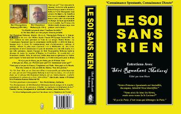

Ramakant Maharaj est le disciple direct de feu Nisargadatta Maharaj avec lequel il passa 19 années. Depuis 1962, il a assisté régulièrement aux entretiens de son Maître jusqu’à son Mahasamadhi en 1981. Depuis plus de dix ans maintenant, Ramakant Maharaj reçoit tous les dévots et disciples du monde entier désirant connaître l’Ultime Vérité à l’Ashram de Nashik.
Avant d'aller voir ce maître, assurez vous d'avoir lu "Je suis Cela" de son maître Nisargadatta Maharaj et "Le Soi sans rien", une compilation de ses satsangs.

Citations
"Quelle est votre conclusion après avoir lu tous ces livres sur la spiritualité?"
"La Connaissance doit vous être utile sur votre lit de mort. Un jour ou l’autre, vous devrez quitter cette “maison”.."
"Chaque moment dans votre vie est très, très important. Chaque moment dans votre vie est très, très important. Autrement, il y aura un autre rêve, un autre rêve, un autre rêve."
"Ne signez rien aveuglément, à nouveau! Vous n’êtes pas né. Soyez vigilant!"
"Beaucoup essayent d’imprimer leurs propres idées en se référant aux Maîtres. Généralement, il est attendu que vous ochiez la tête en disant “Correct, correct!” Pas vous! Pas vous, pas vous définitivement!"
"Nous avons créé les mots en leur donnant une signification. Nous utilisons les mots tout le temps. Prenez les mots “Dieu” et “singe”. Nous disons “Dieu” est une déité et “singe” est un animal. Si nous disions que “Singe signifie Déité”, qu’arrive-t-il? Rien! C’est simplement les mots qui ont changé, pas leur essence ou leur substance. Oubliez les mots. Soyez avec la Réalité! Prenez du bon temps, savourez votre Spiritualité."
"Connaissez-vous vous-même dans un sens réel. Nous nous connaissons nous-même dans notre corps-forme. Ce n’est pas votre identité. Votre Identité est Non-Identifiée, Invisible, Anonyme. Votre Présence Spontanée est la cause de la Projection Spontanée du monde. Vous êtes l’Ultime Vérité. Vous êtes non-né."
"Hors de Vous-même, il n’y a pas de Dieu, pas de Brahman – Dieu est dans Vous et nulle part ailleurs. Ceci est très libérateur parce que cela signifie qu’en dehors de Moi-même il n’y a pas de Dieu, rien de rien! Je suis la Source de Tout ! Vous êtes la Source, Vous êtes la Puissance. Entrez dans la caverne et découvrez votre trésor."
"Il n'y a pas de chemin. Vous êtes la destination."
"Progres, "dégrès", tout cela sont des concepts, il n’y a pas de progrès. L’espace fait-il des progrès ? Votre Présence est juste comme l’espace. Parce que vous vous mesurez en forme humaine, vous dite que des hauts et des bas sont là. ."
"Le ‘je’ basé sur le corps est censé se dissoudre. C’est la simple vérité, vérité finale. Les noms sont donnés : Brahman, Atman, Parahatman, Dieu, Maître. C’est pourquoi le maître dit : à part le Soi sans soi, il n’y a pas Brahman, Atman, Parahatman, Dieu, pas de maître. Connais-toi et sois tranquille. Identifie toi et sois tranquille. Parce qu’il n’y a pas de faiseur, pas d’actes. Lorsque tout se termine, là vous êtes. Celui qui voit est un reflet. Si le voyant n’est pas là, qui parle du monde, qui parle de connaissance ? Quelle est la valeur de la connaissance ? Alors il n’y a pas de salut, d’enfer, de paradis. Tous ces concepts sont supposés se dissoudre. Vous devenez les victimes de ces concepts basés sur le corps."
"Toutes les parties du corps appartiennent aux cinq éléments. De haut en bas, chaque atome appartiennent aux cinq éléments. En quittant le corps, les 5 éléments reprennent le corps. Vous êtes au delà de ça, au-delà de l’espace."
"Respectez vous. Votre Présence est inestimable. Mais à cause du corps, nous nous sous-estimons. Comme un mendiant qui ne sait pas qu’il est riche. C’est pourquoi nous suivons ce processus : méditation, dévotion, connaissance, pour nous rappeler, pour nous identifier. Je martèle tout le temps, j’invite l’attention de l’écoutant invisible, j’essaie d’enlever toutes ces couches. Le feu et là, il faut enlever les cendres."
"Ce qui est appelé ‘je' vous joue des tours. Vous vous mesurez en tant que corps. Il n’y a pas de ‘je’ du tout. Le ‘je’ est venu avec le corps. Quand le corps n’était pas là, où était le ‘je’? Rien n’était là. Ce n’est absolument pas votre identité. Vous êtes l’identité invisible, anonyme, non identifiée. Pas de forme. Pas d’experience, personne pour faire l’expérience. Alors ne pensez pas."
Sri Ramakant Maharaj

A propos de l'auteur

2016 © Tout est Lumière. Copyleft.